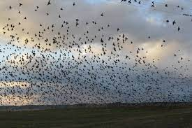

Texto
En muchos medios de comunicación podemos leer noticias de cuántas personas han acudido a una manifestación o concierto al aire libre. Nos podríamos preguntar, ¿cómo lo pueden calcular?
También es posible querer llevar un control de determinados animales para tener un censo aproximado

Incluso se puede querer contar leucocitos en sangre
Es evidente que en estos casos no podemos contar toda la población tendremos que realizar una aproximación. Para ello tomaremos unas muestras y realizaremos una estimación de la población global
Lee el siguiente artículo sobre el conteo de personas. (artículo)
Existe una aplicación que realiza el cálculo, aunque no tiene en cuenta el mobiliario urbano. Puedes practicar con ella para que te hagas una idea de cómo se realiza.
En el siguiente vídeo te explica como contar células (vídeo)